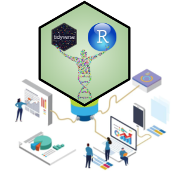

R for Bio Data Science

A tidy approach to wrangling, exploring, visualising and communicating bio data with an emphasis on doing collaborative and reproducible bioinformatics projects
Leon Eyrich Jessen & the TA team
Welcome to R for Bio Data Science
So, you signed up for the 22100/22160 bioinformatics study line course - Congratulations! That was your first step towards getting a set of bio data science skills, which will serve you through your future career regardless of your path!
Inspirational quotes can be cliche, however this one hits the nail on the head:
- “Think about the readability of your code. Every project your work on is fundamentally collaborative. Even if you are not working with any other person, you are always working with future you and you really do not want to be in a situation where future you has no idea what past you was thinking, because past you will not respond to any emails!” Hadley Wickham
Bio Data Science in intrinsically collaborative (even if it’s just you working) and intrinsically interdisciplinary, so collaborative-, reproducibility- and communication- skills are key. In this course, you will learn how to do modern project oriented collaborative bio data science in tidy R - Welcome!
Course Essentials
Before First Class
Please go and answer this brief anonymous R for Bio Data Science Pre-course Questionnaire
Description and Prerequisites
See full course description here: 22100 / 22160 and please do note that it is assumed that the student has existing knowledge of mathematics, statistics, basic programming (language irrelevant), life science and bioinformatics corresponding to bachelor level. Be aware that you can still attend the course regardless, but in that case extra lifting during the course is to be expected.
When and Where
Teaching sessions will be E3A, Tuesday mornings 8 - 12 in building 358, room 060a (exercises: Also room 045) and the general schedule will be:
- 08.00 - 08.30 Recap of key points from last weeks exercises
- 08.30 - 09.00 Introduction to theme of the day
- 09.00 - 12.00 Exercises
Curriculum
The course curriculum is available by using the table of content on the left. Please note that this course is designed as a semi-flipped classroom, meaning that you will prepare materials from home and then I will cover selected key points and then the emphasis will be on hands on. Please note, this means that you cannot expect that all preparation materials will be re-iterated in class. This entails, that you have to make sure to prepare, as having prepared the materials is a prerequisite for working hands on with the exercises.
Course Materials
The teaching will largely follow “R for Data Science (2e)” by Hadley Wickham, Mine Çetinkaya-Rundel, and Garrett Grolemund, but also other open source learning materials will be used. There will be a mixture of videos and reading materials.
Getting Started
Please proceed to the Getting started section